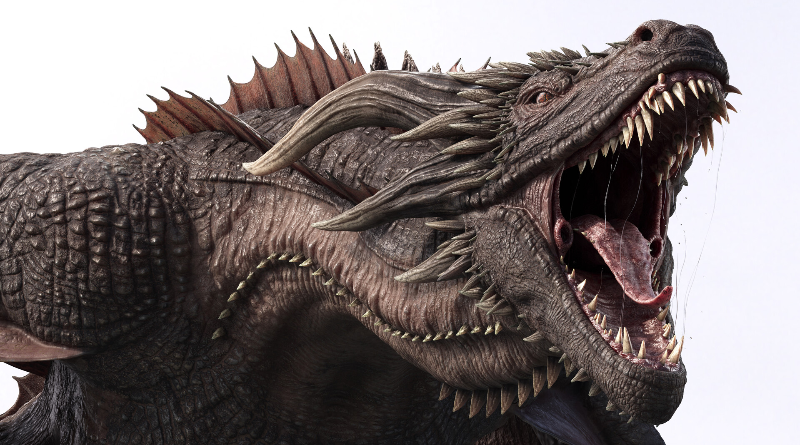

Dragões do Universo Gelo e Fogo


- 

Caraxes
Caraxes, também chamado de Wyrm de Sangue e Verme Sangrento, foi o dragão montado pelo Príncipe Aemon Targaryen durante o reinado do Rei Jaehaerys I Targaryen e, mais tarde, pelo Príncipe Daemon Targaryen durante a Dança dos Dragões.
Ele era vermelho, imenso e magro. Em batalha era formidável, temível e experiente. Durante a Dança, Caraxes tinha metade do tamanho de Vhagar. Famoso por sua ferocidade, ele era esguio e de cor vermelho-sangue. Com o passar dos anos, ele se tornou cada vez mais formidável e experiente.
Syrax
Syrax era caracterizada por suas escamas amarelas. Ela era enorme e formidável, mas não tão temível ou experiente em batalha como Caraxes. Foi mantida em correntes e era muito bem alimentada. Syrax já não caçava há anos quando iniciou a guerra civil.
Rhaenyra tomou Syrax como uma montaria pela primeira vez em 104 AC, quando a princesa tinha sete anos de idade. Syrax foi descrita como uma "jovem" dragão-fêmea na época, e a própria Rhaenyra nomeou-a "Syrax" (em homenagem a uma deusa valiriana) - sugerindo fortemente que Syrax não tinha tido cavaleiro anterior.
Vhagar
Vhagar foi uma dragão-fêmea montada por Visenya durante a Conquista, ao lado do Balerion de Aegon o Conquistador e o Meraxes de sua irmã Rhaenys. Outros cavaleiros de dragão de Vhagar foram Lady Laena Velaryon, Príncipe Aemond Targaryen e Príncipe Baelon Targaryen, o Bravo.
Vhagar ganhou este nome em homenagem a um dos deuses da Antiga Valíria.
De acordo com Tyrion Lannister, Vhagar era grande o suficiente para colocar um cavalo goela abaixo. Dizem que a respiração de Vhagar era tão quente que podia derreter a armadura de um cavaleiro e cozinhá-lo por dentro.
Meleys
Meleys, chamada Rainha Vermelha, foi uma velha dragão-fêmea montada pela Princesa Alyssa Targaryen durante o Reinado do Rei Jaehaerys I Targaryen e, mais tarde, pela Princesa Rhaenys Targaryen.
Suas escamas eram escarlates, e as membranas de suas asas eram cor-de-rosa. Sua crista, chifres e garras eram brilhantes como cobre. Ela ficou preguiçosa, mas era temível quando despertada. Meleys era velha, esperta e não estranhava batalha.
Como os dragões nunca param de crescer à medida que envelhecem, Meleys foi aparentemente uma das maiores e mais antigas dragões durante a Dança dos Dragões. Vhagar, último dos três dragões Targaryen originais, facilmente dominava Arrax - um dragão juvenil que recentemente crescera o suficiente para carregar um cavaleiro. Até Caraxes enfrentou uma dura luta contra Vhagar. Em contraponto, acreditava-se que em uma luta de um para um, Vhagar teria dificuldade em lutar contra Meleys.
Sunfyre
Sunfyre, também conhecido como Sunfyre, o Dourado, foi um dragão e a montaria do Rei Aegon II Targaryen.
De acordo com Arquimeistre Gyldayn, Sunfyre era o dragão mais belo já visto na Terra. Sunfyre tinha douradas escamas brilhantes como ouro batido na luz do sol e asas com membranas rosa-claro. Suas chamas eram douradas também. Enorme e pesado, Sunfyre era um lutador formidável e feroz apesar de sua juventude.
O ovo de dragão de Sunfyre chocou em Pedra do Dragão. Embora o ano exato de nascimento de Sunfyre nunca tenha sido declarado, ele foi descrito como sendo um dragão "jovem" em 120 d.C. e 129 d.C.. Sabe-se que Sunfyre era mais velho que Tessarion. Embora não seja conhecido com precisão quando exatamente o príncipe Aegon tomou Sunfyre como sua montaria, sabemos que em 120 d.C. Aegon já montava Sunfyre.
Tessarion
Tessarion, também conhecida como a Rainha Azul, foi um dragão fêmea. Ela era montada por Daeron Targaryen.
Tessarion tinha escamas azuis, com asas escuras como cobalto. Como cor secundária, suas garras, crista e as escamas da barriga eram tão brilhantes quanto o cobre batido. Até suas flamas eram da cor do cobalto. Ela tinha tamanho para batalha mas ainda era uma jovem dragão e mais ágil no ar do que seus irmão mais velhos. Era quase o tamanho de Seasmoke, mas era três vezes menor que Vermithor e em comparação não era uma besta tão terrível como ele.
Vermithor
Vermithor, chamado de a Ira de Bronze ou a Fúria de Bronze, foi um dragão macho montado pelo rei Jaehaerys I Targaryen.
Vermithor era um dragão bronze com "grandes asas bronzeadas". Vermithor já era um dragão grande em 48 d.C.; Apenas Balerion e Vhagar eram maiores. No período da Dança dos Dragões, Vermithor já tinha quase 100 anos de idade.
Vermithor era considerado uma criatura temível. Acostumado aos homens e vivido com um cavaleiro anterior, no período do reinado de Aegon II Targaryen, Vermithor tolerava a presença de pessoas ao seu redor e aceitou novos montadores. Vermithor e Silverwing frequentemente enrolavam-se.
Drogon
Drogon é um dos dragões nascidos no Mar Dothraki. Daenerys o batizou com o nome de Drogon em homenagem ao seu marido morto, Drogo.
Foi considerado a reencarnação de Balerion, o Terror Negro, mas Daenerys decidiu dar-lhe um novo nome para uma nova vida. É o maior e mais agressivo entre os três dragões de Daenerys, e ela tem problemas em controlá-lo.
Drogon tem escamas pretas, seus chifres e placas são vermelho sangue e seus olhos são dois poços vermelhos fumegantes.
As chamas que Drogon exala são uma mistura de negro e vermelho e o calor que delas emanam pode ser sentido a vários metros de distância. Seu bater de asas é como um trovão. Seu sangue é negro.
Rhaegal
Rhaegal é um dos dragões nascidos no Mar Dothraki, junto com Drogon e Viserion. Foi batizado por Daenerys Targaryen com esse nome em homenagem ao irmão dela, Rhaegar Targaryen.
Rhaegal possui escamas verdes, um verde escuro, cor de musgo na floresta profunda. Seus olhos são cor de bronze, mais brilhante do que um escuro polido e brilhante com seu próprio calor. Sua chama é laranja e amarela atravessada por fios verdes.
Viserion
Viserion é um dos dragões nascidos no Mar Dothraki, junto com Drogon e Rhaegal. Sob o comando de Daenerys Targaryen, ele foi nomeado em homenagem ao irmão dela, Viserys Targaryen.
As escamas de Viserion são cor de creme, mas os seus chifres, os ossos da asa e sua linha espinhal tem coloração dourada.
Os dentes são adagas negras brilhantes, os olhos são duas piscinas de ouro derretido e sua chama é ouro pálido com raios de vermelho e laranja.